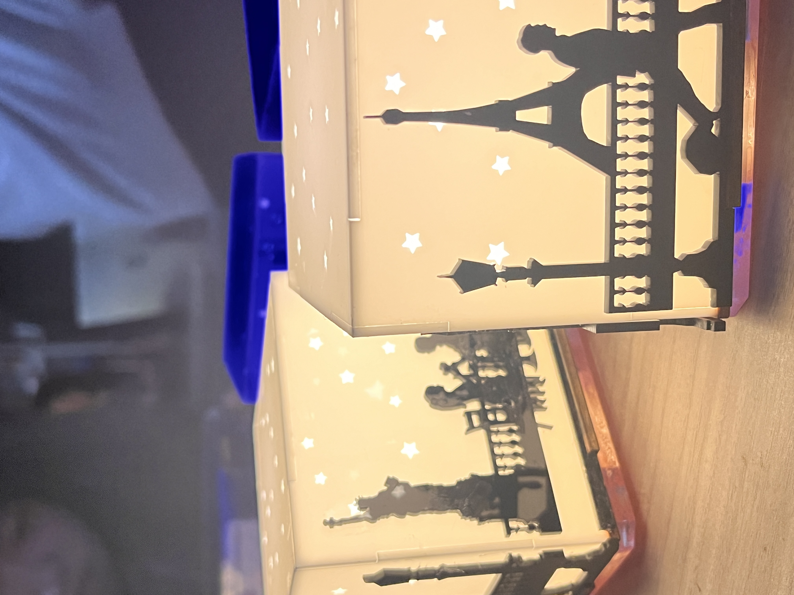
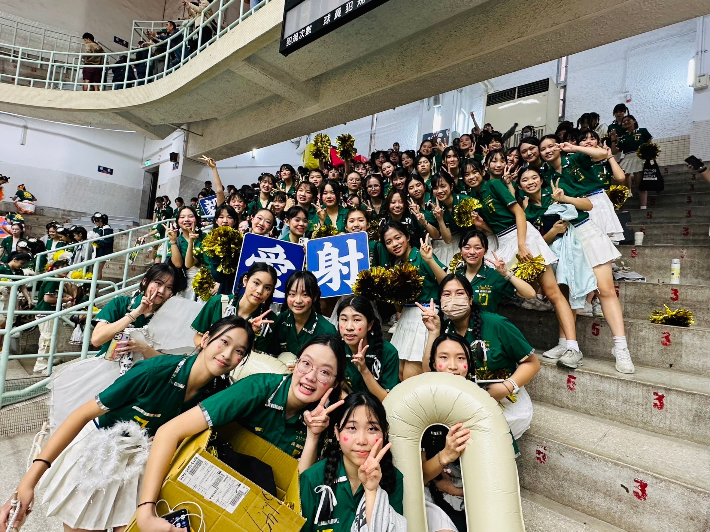

Jessica Chi 紀蘊倢
自我介紹專欄｜以黑白報紙風格記錄我在辯論、交流、舞蹈、科學與創意上的學習旅程。
英語辯論
國際交流
舞蹈表演
科學探索
創新設計
回到主頁
在辯論中擁抱未知
英語辯論
從校園交流到國際對話
國際交流
熱愛與自我回聲

舞蹈表演
好奇心的反應式
科學探索
思考、觀察與創意

創新設計
特殊優良表現
115學年度 國泰卓越獎助計畫 獲獎者
114學年度 臺灣 辯士成就獎（Debater of the Year）
114學年度 臺北市 優良學生
113學年度 北一女中 學生議會議長